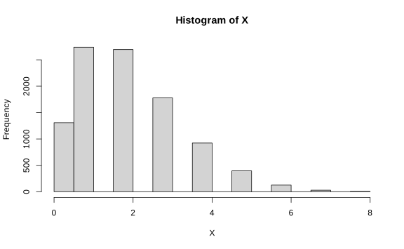

Capítulo 5 Estadísticos Suficientes y Criterio de Factorización
5.1 Estadísticos suficientes
Una función de verosimilitud se va a describir a través de un número. El objetivo es buscar un estadístico \(T=r(X_1,\dots,X_n)\) que resuma de manera óptima la información de \(X_1,\dots,X_n\)
Definición. Sea \(X_1,\dots,X_n\) una muestra indexada por \(\theta\). Sea \(T\) un estadístico, suponga que para cada \(\theta \in \Omega\) y para cada \(t\) en la imagen de \(T\), \(X_1\cdots X_n|T=t\) depende solamente de \(t\) y no de \(\theta\). Entonces \(T\) es suficiente.
5.2 Teorema de Factorización de Fisher
Teorema. Si \(X_1,\dots,X_n\) es una muestra aleatoria de \(f(X|\theta)\), el parámetro \(\theta\) es desconocido. Un estadístico \(T=r(X_1,\dots,X_n)\) es suficiente si y solo si \[f_n(x|\theta) = u(x)v(r(x),\theta)\;\forall x\in \mathbb R, \; \forall \theta \in \mathbb R.\]
Prueba (Discreta). \(f_n(x|\theta) = \mathbb P(X=x|\theta)\)
“\(\Leftarrow\)” Sea \(A(t) = \{x\in \mathbb R| r(x) =t\}\). Para \(\theta \in \mathbb R\), \(x\in A(t)\),
\[\begin{align*} \mathbb P(X=x|T=t) & = \dfrac{\mathbb P(X=x \cap T=t)}{\mathbb P (T=t)} \\ &= \dfrac{f_n(x|\theta, T=t)}{\displaystyle\sum_{y \in A(t)}f_n(y|\theta)} \\ & = \dfrac{u(x)v(r(x),\theta)}{\displaystyle\sum_{y \in A(t)} u(y)v(r(y),\theta)} \\ & = \dfrac{u(x)v(t,\theta)}{\displaystyle v(t,\theta)\sum_{y \in A(t)} u(y)} \text{(Como \(y\in A(t)\) entonces \(r(y) = t\) que es constante.)}\\ &= \dfrac{u(x)}{\displaystyle\sum_{y \in A(t)}u(y)} \end{align*}\]
no depende de \(\theta\).
Si \(x\notin A(t) \implies \mathbb P(X=x|T=t) = 0\) no depende de \(\theta\).
“\(\Rightarrow\)” Si \(T\) es un estadístico suficiente, \(u(x) = \mathbb P(X=x|T=t)\) no depende de \(\theta\). Sea \(v(t,\theta) = \mathbb P_{\theta}(T=t)\). Entonces
\[ f_n(x|\theta) = \mathbb P (X=x|\theta) = \dfrac{\mathbb P(X=x|\theta)}{\mathbb P(T=t)}\mathbb P(T=t) = u(x)v(t,\theta).\]
Consecuencia: \(f_n(x|\theta) \propto v(r(x),\theta)\) (\(u(x)\) es una constante con respecto a \(\theta\)). Aplicando el teorema de Bayes, \[ \pi(\theta|x) \propto \pi(\theta)v(r(x),\theta).\]
Corolario. Un estadístico \(r(x)\) es suficiente si y solo si no importa cuál previa de \(\theta\) se use, la posterior depende solamente de \(r(x)\) a través de los datos.
Ejemplo. \(X_1,\dots, X_n \sim \text{Poi}(\lambda)\),
\[f_n(x|\theta) = \prod_{i=1}^n \dfrac{e^{-\lambda}}{x_i!} = \dfrac{e^{-\lambda n} \lambda ^{\sum x_i (\;= r(x))}}{\prod x_i!} = \underbrace{\dfrac{1}{\prod_{i=1}^n x_i!}}_{u(x)} \underbrace{e^{-\lambda n}\lambda^{r(x)}}_{v(r(x),\lambda)}\]
Si \(x_i < 0\) para al menos un \(i\), entonces \(f_n(x|\theta) = 0\). Tome \(u(x) = 0\). Por el teorema de factorización, \(r(x) = \sum x_i\) es un estadístico suficiente para \(\lambda\).
Ejemplo. \(X_1,\dots, X_n \sim f(x|\theta)\) \[ f(x|\theta) = \begin{cases}\theta x^{\theta-1} & 0<x< 1\\ 0 & \text{otro caso}\end{cases}\]
Verosimilitud: (\(0<x_i<1\) \(\forall i\))
\[ f_n(x|\theta) = \theta^n\bigg[\underbrace{\prod(x_i)}_{r(x)}\bigg]^{\theta-1} = \underbrace{\theta^n(r(x))^{\theta-1}}_{v(r(x),\theta)}\cdot \underbrace{1}_{u(x)}\]
Por el teorema de factorización \(r(x) = \prod x_i\) es un estadístico suficiente.,
Ejemplo. \(X_1,\dots, X_n \sim N(\mu, \sigma^2)\) (\(\sigma^2\) conocido).
\[\begin{align*} f_n(x|\theta) & = (2\pi\sigma^2)^{-n/2} \exp\bigg[-\dfrac{1}{2\sigma^2}\sum_{i=1}^n(X_i-\mu)^2\bigg] \\ & = (2\pi\sigma^2)^{-n/2} \exp\bigg[-\dfrac{1}{2\sigma^2}\underbrace{\sum_{i=1}^n X_i^2}_{r_2(x)}+ \dfrac{\mu}{\sigma^2}\underbrace{\sum_{i=1}^n X_i}_{r_1(x)} - \dfrac{\mu^2 n}{2\sigma^2} \bigg] \end{align*}\]
Tome \[u(x) = (2\pi\sigma^2)^{-n/2}\exp\bigg[-\dfrac{1}{2\sigma^2} \displaystyle\sum_{i=1}^n X_i^2\bigg],\] \[ v(r_{1}(x),\mu) = \exp\bigg[\dfrac{\mu}{\sigma^2}r_{1}(x) - \dfrac{n\mu^2}{2\sigma^2}\bigg]. \]
Por teorema de factorización, \(r_{1}(x)=\sum X_i\) es un estadístico suficiente para \(\mu\).
Con \(\sigma^2\) desconocido, \(\theta = (\mu,\sigma^2)\), tome \(u(x) = 1\), \[ v(r_1(x),r_2(x),\theta) = (2\pi\sigma^2)^{-n/2}\exp\bigg[\dfrac{-r_2(x)}{2\sigma^2} + \dfrac{\mu r_1(x)}{\sigma^2}- \dfrac{n\mu^2}{2\sigma^2}\bigg] \] Entonces \[ (r_1(x),r_2(x)) = \left(\sum{x_i},\sum x_i ^2\right) \] es un estadístico suficiente para \((\mu, \sigma^2)\).
Ejemplo. \(X_1,\dots, X_n \stackrel{i.i.d}{\sim}\text{Unif}(0,\theta)\), \(\theta>0\), \(f(x|\theta) = 1_{[0,\theta]}(x)\dfrac 1\theta\). \[f_n(x|\theta) = \prod_{i=1}^n 1_{[0,\theta]}(x_i)\left(\dfrac 1\theta \right) \]
Nota: si al menos uno de los \(x_i<0\) o \(x_i>\theta\), \(u(x) = 0\) \((f(x|\theta) = 0)\) (Trivial).
Si \(0<x_i<\theta\) \(\forall i \implies f_n(x|\theta) = 1_{[0,\theta]}(\max\{x_i\})\left(\dfrac 1\theta \right)^n.\)
Si \(T = r(x) = X_{(n)} \implies f_n(x|\theta) = u(x)v(r(x),\theta)\), \(u(x) = 1\). Por teorema de factorización, \(r(x) = x_{(n)}\) es un estadístico suficiente para \(\theta\).
5.3 Estadístico suficiente multivariado.
Si \(\theta \in \mathbb R^k\), \(k\geq 1\) se necesita al menos \(k\) estadísticos \((T_1,\dots,T_k)\) para cada \(i=1,\dots,k\), \(T_i = r_i(X_1,\dots, X_n)\).
Definición. Suponga que para cada \(\theta\in \Omega\) y \((t_1,\dots, t_k) \in \mathbb R^k\) valor del estadístico \((T_1,\dots,T_k)\), la distribución condicional de \(X_1,\dots, X_n\) dado \((T_1,\dots,T_k) = (t_1,\dots, t_k)\) no depende de \(\theta\), entonces \((T_1,\dots,T_k)\) es un estadístico suficiente para \(\theta\).
Criterio de factorización:
\[ f_n(x|\theta) = u(x)v(r_1(x),\dots,r_k(x),\theta) \Leftrightarrow T = (r_1(x),\dots,r_k(x)) \text{ es suficiente}\]
Si \((T_1,\dots,T_k)\) es suficiente para \(\theta\) y si \((T_1',\dots,T_k') = g(T_1,\dots,T_k)\) donde \(g\) es biyectiva, entonces \((T_1',\dots,T_k')\) es suficiente para \(\theta\). \[ u(x)v(r(x)|\theta) = u(x)v(g^{-1}(g(r(x))),\theta).\]
Ejemplo. Considere los siguiente
\[\begin{align*} T_1 &= \sum_{i=1}^{n} X_i \\ T_2 &= \sum_{i=1}^{n} X_i^2 \\ T_1' & = \frac{1}{n} \sum_{i=1}^{n} X_i \\ T_2' &= \frac{1}{n} \sum_{i=1}^{n} (X_i - \overline{X}_n) ^{2} \end{align*}\]
Entonces defina la siguiente función \[ (T_1',T_2') = g(T_1,T_2) = \left(\dfrac{1}{n}T_1,\dfrac{1}{n}T_2 - \dfrac{1}{n^2}T_1^2\right). \]
De la primera entrada, \[ T_1' = \dfrac 1n T_1 \implies T_1 = nT_1'.\] De la segunda, \[\begin{align*} T_2' = \dfrac 1n T_2 - \dfrac 1{n^2} & = \dfrac 1n \sum X_i^2 - \left(\dfrac 1n \sum X_i\right)^2\\ & = \dfrac 1n \sum X_i^2 - 2X_i\bar X_n^2 + \bar X_n \\ & = \dfrac 1n \sum(X_i-\bar X_n)^2 = \hat\sigma_n^2 \end{align*}\] Como \(g\) es biyectiva entonces \((\bar X_n, \sigma_n^2)\) es un estadístico suficiente para \((\mu,\sigma^2)\).
Ejemplo. \(X_1,\dots, X_n \sim \text{Unif}(a,b)\), \(a<b\). Encuentre un estadístico suficiente.
Si \(x_i \leq a\) o \(x_i>b\), tome \(u(x) = 0\).
Si \(a< x_i <b\) \(\forall i\),
\(x_i > a\) \(\forall i \Leftrightarrow x_{(1)}>a\).
\(x_i < b\) \(\forall i \Leftrightarrow x_{(n)}<b\).
La verosimilitud es de la forma
\[f_n(x|(a,b)) = \prod_{i=1}^n1_{[a,b]}(x_i) = \underbrace{\dfrac 1{(b-a)^n} 1_{\{(z,w): z>a, w<b\}}(X_{(1)},X_{(n)})}_{v(r_1(x),r_2(x),(a,b))}\cdot \underbrace{1}_{u(x)}\]
Por teorema de factorización \((r_{1}(x), r_{2}(x)) = (X_{(1)},X_{(n)})\) es un estadístico suficiente para \((a,b)\).
5.4 Estadísticos minimales
Idea: un estadístico suficiente que garantice una partición de \(\mathcal X\) (espacio muestral) de la manera más simple posible.
Definición (Estadístico de orden). Sean \(X_1,\dots, X_n \stackrel{i.i.d}{\sim} f\). Al ordenar los datos
\[(Y_1,\dots,Y_n) = (X_{(1)},\dots,X_{(n)}) \text { tal que } Y_1<\dots<Y_n\]
Nota: \((X_{(1)},\dots,X_{(n)})\) es un estadístico suficiente de \(\theta\).
Ejemplo. \(X_1,\dots, X_n \sim \text{Cauchy}(\alpha)\). \[ f(x) = \dfrac1\pi[1+(x-\alpha)^2]^{-1}, x\in\mathbb R\]
Busque un estimador suficiente para \(\alpha \in \mathbb R\).
\[ f_n(x|\alpha) = \prod(x|\alpha) = \dfrac 1\pi [1+(x_i-\alpha)^2]^{-1} = \underbrace{\dfrac 1{\pi^n}}_{u(x)}\underbrace{\prod_{i=1}^n[1+(x_i-\alpha)^2]^{-1} }_{v(y,\alpha)} \] donde \(y = (X_{(1)},\dots,X_{(n)})\) es suficiente para \(\alpha\).
Ejercicio: estime \(\alpha\) usando R o usando método de momentos.
Definición. Un estadístico \(T\) es suficiente minimal si \(T\) es suficiente y es función de cualquier otro estadístico suficiente.
Teorema. Si \(T = r(X_1,\dots, X_n)\) es un estadístico suficiente para \(\theta\), entonces el MLE \(\hat\theta\) de \(\theta\) depende de \(X_1,\dots, X_n\) solamente a través de \(T\). Además, si \(\hat \theta\) es suficiente entonces \(\hat \theta\) es minimal.
Prueba. Por teorema de factorización, \(f_n(x|\theta) = u(x)v(r(x),\theta)\) de \(T =r(x)\) es suficiente y \[\hat\theta = \operatorname*{argmax}_\theta f_n(x|\theta) = \operatorname*{argmax}_\theta v(r(x),\theta), \quad (\Delta)\]
Como \(\hat\theta = g(T)\) para cualquier \(T\) estadístico suficiente, entonces \(\hat\theta\) es minimal.
Teorema. Si \(T = r(X_1,\dots, X_n)\) es un estadístico suficiente para \(\theta\) entonces el estimador bayesiano (bajo una escogencia de \(L\)) depende de \(X_1,\dots, X_n\) solamente a través de \(T\) (el estimador bayesiano es minimal).
Prueba. Sustituya \((\Delta)\) por \(\pi(\theta|x) \propto v(r(x),\theta)\cdot\pi(\theta)\). Como cualquier estimador bayesiano depende de \(\pi(\theta|x)\), cualquier estimador bayesiano depende e los datos a través de \(r(x)\).
5.5 Mejorando estimadores
Idea: ¿Será posible mejorar un estimar que no es suficiente?
¿Existirá otra medida de comparación entre estimadores?
Considere una función de riesgo o pérdida \[ R(\theta,\delta) = \mathbb E[(\delta(x)-\theta) ^2]\] Si \(\delta(x)\) estima una característica de \(F\): \[ R(\theta,\delta) = \mathbb E[(\delta(x)-h(\theta))^2]\quad (\Delta\Delta)\] donde \(h\) es la característica.
Nota: la función de riesgo puede ser calculada con una posterior \(\pi(\theta|X)\).
Definición.
Decimos que \(\delta\) es inadmisible si \(\exists \delta_0\) (otro estimador) tal que \(R(\theta, \delta_{0}) \leq R(\theta,\delta)\) \(\forall \theta \in \Omega\). deltadelta
Decimos que \(\delta_0\) “domina” a \(\delta\) en el caso anterior.
Decimos que \(\delta_0\) es admisible si no existe otro estimador que domine a \(\delta_0\).
A \((\Delta \Delta)\) se le llama MSE o error cuadrático medio.
Teorema (Rao-Blackwell). Sea \(\delta(X)\) un estimador y \(T\) un estadístico suficiente para \(\theta\) y sea \(\delta_0 = \mathbb E[\delta(X)|T]\). Entonces \[ R(\theta,\delta_0) \leq R(\theta,\delta) \; \forall \theta \in \Omega\]
Prueba. Por la desigualdad de Jensen, \[ \mathbb E_\theta[(\delta(x)-\theta)^2] \geq (E_\theta[(\delta(x)-\theta)])^2. \] También, \[\mathbb E[(\delta(x)-\theta)^2|T] \geq (E[(\delta(x)|T)]-\theta)^2 = (\delta_0(T)-\theta)^2.\]
Entonces, \[ \mathbb E[(\delta(x)-\theta)^2] \leq \mathbb E[\mathbb E[(\delta(x)-\theta)^2|T]] = \mathbb E[(\delta(x)-\theta)^2] = R(\theta,\delta).\]
Nota. Si cambiamos a \(R(\theta,\delta) = \mathbb E[|\delta(x)-\theta|]\) (error medio absoluto), el resultado anterior es cierto.
Ejemplo. Sean \(X_1,\dots, X_n \stackrel{i.i.d}{\sim} \text{Poisson}(\theta)\) donde \(\theta\) es la tasa de “visitas” de clientes por hora.
Numericamente podemos hacer el ejemplo con \(\theta = 2\) y una muestra de \(n = 10000\),
## [1] 1 2 4 2 0 0 3 1 3 1 6 2 2 2 1 0 1 1 3 0
A partir de la verosimilitud, \[f_n(X|\theta) = \dfrac{e^{-\theta n} \theta^{\sum X_i}}{\prod X_i!} \] se tiene que \(T=\sum X_i\) es un estadístico suficiente para \(\theta\).
Sea \(Y_i = \begin{cases} 1 & \text{si } X_i = 1\\ 0 & \text{si } X_i \ne 1\end{cases}\).
Esta \(Y\) se calcula de la forma
## [1] TRUE FALSE FALSE FALSE FALSE FALSE FALSE TRUE FALSE TRUEEl objetivo es estimar \(p\) donde \(p\) es la probabilidad de que \(X_i =1\) (solo llegue un cliente por hora). Un estimador de \(p\) (MLE) es \[\delta(x) = \dfrac{\sum Y_i}{n}\]
## [1] 0.2734¿Es el óptimo?
Calculamos \[\mathbb E[\delta(x)|T] = \dfrac 1n \sum_{i=1}^n \mathbb E (Y_i|T)\] Vea que \[\begin{align*} \mathbb E[Y_i|T = t] = \mathbb P(X_i = 1 | T = t) & = \dfrac{\mathbb P(X_i = 1, T=t)}{\mathbb P(T=t)}\\ & = \dfrac{\mathbb P(X_i = 1, \sum_{j\ne i} X_j = t-1)}{\mathbb P(T=t)}\\ & = \dfrac{\mathbb P(X_i = 1) \mathbb P(\sum_{j\ne i} X_j = t-1)}{\mathbb P(T=t)} = \Delta \end{align*}\]
\(\mathbb P(X_i = 1) = \theta e^{-\theta}\)
\(\mathbb P(\sum_{j\ne i}X_j = t-1) = e^{-(n-1)\theta}\dfrac{((n-1)\theta)^{t-1}}{(t-1)!}\)
\(\mathbb P(T=t) = e^{-n\theta}\dfrac{(n\theta)^t}{t!}\)
Entonces, \[\begin{align*} \Delta = \dfrac{\theta e^{-n\theta}\dfrac{((n-1)\theta)^{t-1}}{(t-1)!}}{e^{-n\theta}\dfrac{(n\theta)^t}{t!}} = \dfrac tn \left(1-\dfrac 1n\right)^{t-1} = G\left(\dfrac tn\right) \end{align*}\]
es el estadístico con MSE mínimo.
## [1] 0.2686675En este caso \(\delta_0\) es mejor que \(\delta\) bajo una pérdida cuadrática.